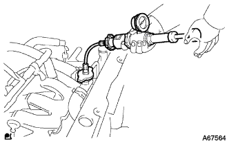

クーリングシステム 機能点検 |
|  |
冷却液をラジエータに注入し、ラジエーターキャップテスターを取り付ける。
| バンザイ製 |
|
| イヤサカ製 |
|
エンジンを暖機する。
137kPa{1.4kgf/cm2} までポンピングし、圧力が下がらないことを確認する。
エンジン冷間時、リザーブタンクの水位がFULL-LOWの間にあることを確認する。
ウォータフィラキャップを取りはずす。
ウォータフィラキャップやウォータフイラーホールまわりに過度のサビや湯アカのたい積がないか点検する。
ウォータフィラキャップを取り付ける。